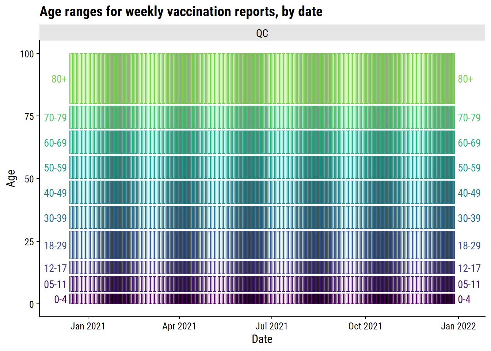
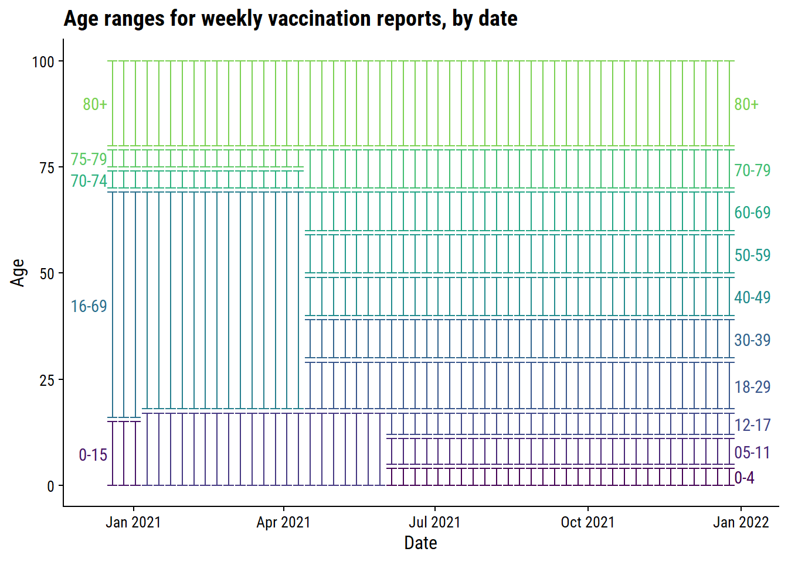

R setup
library(tidyverse)
library(patchwork)
library(httr)
library(gt)
library(dunnr)
extrafont::loadfonts(device = "win", quiet = TRUE)
theme_set(theme_td())
set_geom_fonts()
set_palette()Taylor Dunn ![]()
library(tidyverse)
library(patchwork)
library(httr)
library(gt)
library(dunnr)
extrafont::loadfonts(device = "win", quiet = TRUE)
theme_set(theme_td())
set_geom_fonts()
set_palette()With this post, I will explore the Canadian COVID-19 tracker API and, depending on how it goes, turn some of the code into an R package. For an introduction to working with APIs, see this vignette from the httr package.
In 2022, I ported my website from Distill to Quarto. This required me to re-run all the code in this post, so the data will go up to 2022-08-21, not 2021-12-28 (which is the date of the post).
The first data I will retrieve is the data summaries overall, by province, and by health region. To save typing it every time, the following base_url is required for all GET requests:
base_url <- "https://api.covid19tracker.ca/"Modify the URL with summary to get the latest data across all provinces:
api_url <- paste0(base_url, "summary")Send the GET request with httr:
resp <- httr::GET(api_url)
respResponse [https://api.covid19tracker.ca/summary]
Date: 2022-08-22 02:27
Status: 200
Content-Type: application/json
Size: 702 BThis returned a response object with the following structure:
str(resp, max.level = 1)List of 10
$ url : chr "https://api.covid19tracker.ca/summary"
$ status_code: int 200
$ headers :List of 12
..- attr(*, "class")= chr [1:2] "insensitive" "list"
$ all_headers:List of 1
$ cookies :'data.frame': 0 obs. of 7 variables:
$ content : raw [1:702] 7b 22 64 61 ...
$ date : POSIXct[1:1], format: "2022-08-22 02:27:30"
$ times : Named num [1:6] 0 0.0477 0.0895 0.185 0.2508 ...
..- attr(*, "names")= chr [1:6] "redirect" "namelookup" "connect" "pretransfer" ...
$ request :List of 7
..- attr(*, "class")= chr "request"
$ handle :Class 'curl_handle' <externalptr>
- attr(*, "class")= chr "response"The status_code is the first thing to check:
resp$status_code[1] 200An HTTP status code of 200 is the standard indicator of a successful request.
Once confirmed successful, the content returned from the request is:
head(resp$content, 25) [1] 7b 22 64 61 74 61 22 3a 5b 7b 22 6c 61 74 65 73 74 5f 64 61 74 65 22 3a 22Looks like the raw data is represented in hexadecimal. The httr::content() function can parse this data:
content_parsed <- httr::content(resp, as = "parsed")
str(content_parsed)List of 2
$ data :List of 1
..$ :List of 23
.. ..$ latest_date : chr "2022-08-19"
.. ..$ change_cases : chr "11044"
.. ..$ change_fatalities : chr "98"
.. ..$ change_tests : chr "66399"
.. ..$ change_hospitalizations : chr "-49"
.. ..$ change_criticals : chr "-6"
.. ..$ change_recoveries : chr "10486"
.. ..$ change_vaccinations : chr "111235"
.. ..$ change_vaccinated : chr "6837"
.. ..$ change_boosters_1 : chr "13955"
.. ..$ change_boosters_2 : chr "72513"
.. ..$ change_vaccines_distributed: chr "0"
.. ..$ total_cases : chr "4119278"
.. ..$ total_fatalities : chr "43481"
.. ..$ total_tests : chr "60894369"
.. ..$ total_hospitalizations : chr "5352"
.. ..$ total_criticals : chr "275"
.. ..$ total_recoveries : chr "3735937"
.. ..$ total_vaccinations : chr "88194801"
.. ..$ total_vaccinated : chr "31530453"
.. ..$ total_boosters_1 : chr "19033545"
.. ..$ total_boosters_2 : chr "4703251"
.. ..$ total_vaccines_distributed : chr "101586018"
$ last_updated: chr "2022-08-21 20:27:03"The returned data structure is a list of lists. data is a list with all of the summary statistics, while last_updated gives a timestamp of when the data was last updated. Put the data into a data frame:
summary_overall <- content_parsed$data %>% data.frame()
glimpse(summary_overall)Rows: 1
Columns: 23
$ latest_date <chr> "2022-08-19"
$ change_cases <chr> "11044"
$ change_fatalities <chr> "98"
$ change_tests <chr> "66399"
$ change_hospitalizations <chr> "-49"
$ change_criticals <chr> "-6"
$ change_recoveries <chr> "10486"
$ change_vaccinations <chr> "111235"
$ change_vaccinated <chr> "6837"
$ change_boosters_1 <chr> "13955"
$ change_boosters_2 <chr> "72513"
$ change_vaccines_distributed <chr> "0"
$ total_cases <chr> "4119278"
$ total_fatalities <chr> "43481"
$ total_tests <chr> "60894369"
$ total_hospitalizations <chr> "5352"
$ total_criticals <chr> "275"
$ total_recoveries <chr> "3735937"
$ total_vaccinations <chr> "88194801"
$ total_vaccinated <chr> "31530453"
$ total_boosters_1 <chr> "19033545"
$ total_boosters_2 <chr> "4703251"
$ total_vaccines_distributed <chr> "101586018"All of these variables are character type, and should be converted into integer and Date types:
summary_overall <- summary_overall %>%
mutate(
across(matches("^change|^total"), as.integer),
across(matches("date"), as.Date)
)
glimpse(summary_overall)Rows: 1
Columns: 23
$ latest_date <date> 2022-08-19
$ change_cases <int> 11044
$ change_fatalities <int> 98
$ change_tests <int> 66399
$ change_hospitalizations <int> -49
$ change_criticals <int> -6
$ change_recoveries <int> 10486
$ change_vaccinations <int> 111235
$ change_vaccinated <int> 6837
$ change_boosters_1 <int> 13955
$ change_boosters_2 <int> 72513
$ change_vaccines_distributed <int> 0
$ total_cases <int> 4119278
$ total_fatalities <int> 43481
$ total_tests <int> 60894369
$ total_hospitalizations <int> 5352
$ total_criticals <int> 275
$ total_recoveries <int> 3735937
$ total_vaccinations <int> 88194801
$ total_vaccinated <int> 31530453
$ total_boosters_1 <int> 19033545
$ total_boosters_2 <int> 4703251
$ total_vaccines_distributed <int> 101586018Instead of aggregating over all provinces, I can use /summary/split to get province-level summaries:
resp <- httr::GET(paste0(base_url, "summary/split"))content_parsed <- content(resp, as = "parsed")
str(content_parsed, max.level = 2)List of 2
$ data :List of 13
..$ :List of 24
..$ :List of 24
..$ :List of 24
..$ :List of 24
..$ :List of 24
..$ :List of 24
..$ :List of 24
..$ :List of 24
..$ :List of 24
..$ :List of 24
..$ :List of 24
..$ :List of 24
..$ :List of 24
$ last_updated: chr "2022-08-21 20:27:03"The data list now has 13 lists corresponding to the 13 provinces and territories. Look at the structure of one of them:
str(content_parsed$data[[1]])List of 24
$ province : chr "ON"
$ date : chr "2022-08-18"
$ change_cases : int 10169
$ change_fatalities : int 56
$ change_tests : int 66399
$ change_hospitalizations : int -54
$ change_criticals : int -5
$ change_recoveries : int 10486
$ change_vaccinations : int 86992
$ change_vaccinated : int 5429
$ change_boosters_1 : int 9964
$ change_boosters_2 : int 59994
$ change_vaccines_distributed: int 0
$ total_cases : int 1399147
$ total_fatalities : int 13869
$ total_tests : int 25220610
$ total_hospitalizations : int 1328
$ total_criticals : int 137
$ total_recoveries : int 1368994
$ total_vaccinations : int 34594350
$ total_vaccinated : int 12270711
$ total_boosters_1 : int 7509601
$ total_boosters_2 : int 2073259
$ total_vaccines_distributed : int 38554461This is the same structure as the overall summary, but with the extra variable province indicating that these numbers are specific to Ontario.
A shortcut to compiling all of these lists into a single data frame with a row per province/territory is to use dplyr::bind_rows():
summary_province <- bind_rows(content_parsed$data)
glimpse(summary_province)Rows: 13
Columns: 24
$ province <chr> "ON", "QC", "NS", "NB", "MB", "BC", "PE", …
$ date <chr> "2022-08-18", "2022-08-19", "2022-08-11", …
$ change_cases <int> 10169, 0, 0, 0, 0, 875, 0, 0, 0, 0, 0, 0, 0
$ change_fatalities <int> 56, 0, 0, 0, 0, 42, 0, 0, 0, 0, 0, 0, 0
$ change_tests <int> 66399, 0, 0, 0, 0, 0, 0, 0, 0, 0, 0, 0, 0
$ change_hospitalizations <int> -54, 0, 0, 0, 0, 5, 0, 0, 0, 0, 0, 0, 0
$ change_criticals <int> -5, 0, 0, 0, 0, -1, 0, 0, 0, 0, 0, 0, 0
$ change_recoveries <int> 10486, 0, 0, 0, 0, 0, 0, 0, 0, 0, 0, 0, 0
$ change_vaccinations <int> 86992, 0, 0, 0, 0, 24243, 0, 0, 0, 0, 0, 0…
$ change_vaccinated <int> 5429, 0, 0, 0, 0, 1408, 0, 0, 0, 0, 0, 0, 0
$ change_boosters_1 <int> 9964, 0, 0, 0, 0, 3991, 0, 0, 0, 0, 0, 0, 0
$ change_boosters_2 <int> 59994, 0, 0, 0, 0, 12519, 0, 0, 0, 0, 0, 0…
$ change_vaccines_distributed <int> 0, 0, 0, 0, 0, 0, 0, 0, 0, 0, 0, 0, 0
$ total_cases <int> 1399147, 1167556, 106158, 70545, 146874, 3…
$ total_fatalities <int> 13869, 16134, 451, 438, 2079, 4037, 46, 14…
$ total_tests <int> 25220610, 16733572, 1777959, 782596, 15278…
$ total_hospitalizations <int> 1328, 2011, 44, 22, 579, 390, 10, 147, 818…
$ total_criticals <int> 137, 45, 8, 1, 28, 22, 1, 5, 28, 0, 0, 0, 0
$ total_recoveries <int> 1368994, 1099129, 43018, 65138, 129338, 30…
$ total_vaccinations <int> 34594350, 20863558, 2235685, 1757172, 2863…
$ total_vaccinated <int> 12270711, 7195120, 842600, 661271, 1108820…
$ total_boosters_1 <int> 7509601, 4568607, 503257, 395689, 593160, …
$ total_boosters_2 <int> 2073259, 1565745, 0, 0, 0, 543279, 7449, 1…
$ total_vaccines_distributed <int> 38554461, 23092789, 2518832, 2212445, 3842…bind_rows() also automatically converts the numeric columns to integer, but the date column is still character:
summary_province <- summary_province %>% mutate(date = as.Date(date))Data my be split even further by health region with summary/split/hr:
resp <- httr::GET(paste0(base_url, "summary/split/hr"))content_parsed <- content(resp, as = "parsed")
str(content_parsed, max.level = 1)List of 2
$ data :List of 92
$ last_updated: chr "2022-08-21 20:27:03"This data consists of 92 entries with mostly the same variables as previous summaries:
str(content_parsed$data[[1]])List of 22
$ hr_uid : int 471
$ date : chr "2022-08-10"
$ change_cases : NULL
$ change_fatalities : NULL
$ change_tests : NULL
$ change_hospitalizations: NULL
$ change_criticals : NULL
$ change_recoveries : NULL
$ change_vaccinations : NULL
$ change_vaccinated : NULL
$ change_boosters_1 : NULL
$ change_boosters_2 : NULL
$ total_cases : int 0
$ total_fatalities : int 8
$ total_tests : int 66969
$ total_hospitalizations : int 2
$ total_criticals : int 0
$ total_recoveries : int 10248
$ total_vaccinations : int 70534
$ total_vaccinated : int 33236
$ total_boosters_1 : NULL
$ total_boosters_2 : NULLThe differences are the hr_uid column in place of province, and the lack of change_vaccines_distributed and total_vaccines_distributed, presumably because these numbers aren’t available at this granularity.
summary_region <- bind_rows(content_parsed$data) %>%
mutate(date = as.Date(date))
glimpse(summary_region)Rows: 92
Columns: 21
$ hr_uid <int> 471, 472, 473, 474, 475, 476, 1201, 1202, 1203…
$ date <date> 2022-08-10, 2022-08-10, 2022-08-10, 2022-08-1…
$ total_cases <int> 0, 0, 0, 0, 0, 0, 0, 0, 0, 0, 0, 0, 0, 0, 0, 0…
$ total_fatalities <int> 8, 16, 5, 6, 3, 7, 1, 1, 5, 58, 207, 13, 16, 7…
$ total_tests <int> 66969, 206300, 115789, 380252, 290508, 176859,…
$ total_hospitalizations <int> 2, 61, 22, 171, 54, 22, NA, NA, NA, NA, 198, 7…
$ total_criticals <int> 0, 7, 1, 17, 5, 1, NA, NA, NA, NA, 9, 6, 0, 3,…
$ total_recoveries <int> 10248, 24271, 9069, 29440, 23925, 14978, 640, …
$ total_vaccinations <int> 70534, 319807, 201758, 513380, 430413, 273939,…
$ total_vaccinated <int> 33236, 152611, 98324, 249513, 208970, 133557, …
$ total_boosters_1 <int> NA, NA, NA, NA, NA, NA, NA, NA, NA, NA, 376228…
$ total_boosters_2 <int> NA, NA, NA, NA, NA, NA, NA, NA, NA, NA, NA, NA…
$ change_recoveries <int> NA, NA, NA, NA, NA, NA, NA, NA, NA, NA, NA, NA…
$ change_vaccinated <int> NA, NA, NA, NA, NA, NA, NA, NA, NA, NA, NA, NA…
$ change_boosters_1 <int> NA, NA, NA, NA, NA, NA, NA, NA, NA, NA, NA, NA…
$ change_boosters_2 <int> NA, NA, NA, NA, NA, NA, NA, NA, NA, NA, NA, NA…
$ change_vaccinations <int> NA, NA, NA, NA, NA, NA, NA, NA, NA, NA, NA, NA…
$ change_cases <int> NA, NA, NA, NA, NA, NA, NA, NA, NA, NA, NA, NA…
$ change_fatalities <int> NA, NA, NA, NA, NA, NA, NA, NA, NA, NA, NA, NA…
$ change_hospitalizations <int> NA, NA, NA, NA, NA, NA, NA, NA, NA, NA, NA, NA…
$ change_criticals <int> NA, NA, NA, NA, NA, NA, NA, NA, NA, NA, NA, NA…hr_uid is a unique identifier for each health region. A lookup table is available through the API with regions:
resp <- httr::GET(paste0(base_url, "regions"))content_parsed <- content(resp, as = "parsed")
str(content_parsed, max.level = 1)List of 1
$ data:List of 92There are 92 elements, matching the 92 health regions in the summary data, with the following structure:
regions <- bind_rows(content_parsed$data)
glimpse(regions)Rows: 92
Columns: 4
$ hr_uid <int> 471, 472, 473, 474, 475, 476, 591, 592, 593, 594, 595, 1011, …
$ province <chr> "SK", "SK", "SK", "SK", "SK", "SK", "BC", "BC", "BC", "BC", "…
$ engname <chr> "Far North", "North", "Central", "Saskatoon", "Regina", "Sout…
$ frename <chr> "Far North", "North", "Central", "Saskatoon", "Regina", "Sout…Add the health region to the summary_region data:
summary_region <- regions %>%
left_join(summary_region, by = "hr_uid")
glimpse(summary_region)Rows: 92
Columns: 24
$ hr_uid <int> 471, 472, 473, 474, 475, 476, 591, 592, 593, 5…
$ province <chr> "SK", "SK", "SK", "SK", "SK", "SK", "BC", "BC"…
$ engname <chr> "Far North", "North", "Central", "Saskatoon", …
$ frename <chr> "Far North", "North", "Central", "Saskatoon", …
$ date <date> 2022-08-10, 2022-08-10, 2022-08-10, 2022-08-1…
$ total_cases <int> 0, 0, 0, 0, 0, 0, 67763, 167426, 77015, 37656,…
$ total_fatalities <int> 8, 16, 5, 6, 3, 7, 581, 1701, 944, 439, 372, 3…
$ total_tests <int> 66969, 206300, 115789, 380252, 290508, 176859,…
$ total_hospitalizations <int> 2, 61, 22, 171, 54, 22, 72, 138, 90, 66, 21, 1…
$ total_criticals <int> 0, 7, 1, 17, 5, 1, 6, 7, 5, 2, 2, 1, 1, 3, 0, …
$ total_recoveries <int> 10248, 24271, 9069, 29440, 23925, 14978, 39899…
$ total_vaccinations <int> 70534, 319807, 201758, 513380, 430413, 273939,…
$ total_vaccinated <int> 33236, 152611, 98324, 249513, 208970, 133557, …
$ total_boosters_1 <int> NA, NA, NA, NA, NA, NA, 404650, 938141, 806464…
$ total_boosters_2 <int> NA, NA, NA, NA, NA, NA, 97819, 162539, 124012,…
$ change_recoveries <int> NA, NA, NA, NA, NA, NA, NA, NA, NA, NA, NA, NA…
$ change_vaccinated <int> NA, NA, NA, NA, NA, NA, 176, 583, 387, 171, 52…
$ change_boosters_1 <int> NA, NA, NA, NA, NA, NA, 431, 1501, 1298, 564, …
$ change_boosters_2 <int> NA, NA, NA, NA, NA, NA, 1740, 3710, 3636, 2733…
$ change_vaccinations <int> NA, NA, NA, NA, NA, NA, 2914, 7977, 7352, 4842…
$ change_cases <int> NA, NA, NA, NA, NA, NA, 183, 283, 197, 167, 45…
$ change_fatalities <int> NA, NA, NA, NA, NA, NA, 10, 11, 8, 12, 1, NA, …
$ change_hospitalizations <int> NA, NA, NA, NA, NA, NA, 9, 21, -21, -6, 2, NA,…
$ change_criticals <int> NA, NA, NA, NA, NA, NA, 1, 0, 3, -6, 1, NA, NA…Reports are much like summaries, but for every day instead of just the most recent.
resp <- httr::GET(paste0(base_url, "reports"))content_parsed <- content(resp, as = "parsed")
str(content_parsed, max.level = 1)List of 3
$ province : chr "All"
$ last_updated: chr "2022-08-21 20:27:03"
$ data :List of 934An additional top-level variable province defines the scope of the report. The data list here consists of 705 elements with the following structure:
str(content_parsed$data[[1]])List of 23
$ date : chr "2020-01-25"
$ change_cases : int 1
$ change_fatalities : int 0
$ change_tests : int 2
$ change_hospitalizations : int 0
$ change_criticals : int 0
$ change_recoveries : int 0
$ change_vaccinations : int 0
$ change_vaccinated : int 0
$ change_boosters_1 : int 0
$ change_boosters_2 : int 0
$ change_vaccines_distributed: int 0
$ total_cases : int 1
$ total_fatalities : int 0
$ total_tests : int 2
$ total_hospitalizations : int 0
$ total_criticals : int 0
$ total_recoveries : int 0
$ total_vaccinations : int 0
$ total_vaccinated : int 0
$ total_boosters_1 : int 0
$ total_boosters_2 : int 0
$ total_vaccines_distributed : int 0This first element has many zeroes, which makes sense as the date (January 25th, 2020) corresponds to the first confirmed case of COVID in Canada. The last element of this list should have today’s data:
str(content_parsed$data[[length(content_parsed$data)]])List of 23
$ date : chr "2022-08-19"
$ change_cases : int 0
$ change_fatalities : int 0
$ change_tests : int 0
$ change_hospitalizations : int 0
$ change_criticals : int 0
$ change_recoveries : int 0
$ change_vaccinations : int 0
$ change_vaccinated : int 0
$ change_boosters_1 : int 0
$ change_boosters_2 : int 0
$ change_vaccines_distributed: int 0
$ total_cases : int 1167556
$ total_fatalities : int 16134
$ total_tests : int 16733572
$ total_hospitalizations : int 2011
$ total_criticals : int 45
$ total_recoveries : int 1099129
$ total_vaccinations : int 20863558
$ total_vaccinated : int 7195120
$ total_boosters_1 : int 4568607
$ total_boosters_2 : int 1565745
$ total_vaccines_distributed : int 23092789The data may be bound together in the same way:
report_overall <- bind_rows(content_parsed$data) %>%
mutate(date = as.Date(date))To split data by province, the two-letter code is provided as reports/province/{code}:
resp <- httr::GET(paste0(base_url, "reports/province/ns"))content_parsed <- content(resp, as = "parsed")
report_ns <- bind_rows(content_parsed$data) %>%
mutate(date = as.Date(date))
glimpse(report_ns)Rows: 930
Columns: 23
$ date <date> 2020-01-25, 2020-01-26, 2020-01-27, 2020-…
$ change_cases <int> 0, 0, 0, 0, 0, 0, 0, 0, 0, 0, 0, 0, 0, 0, …
$ change_fatalities <int> 0, 0, 0, 0, 0, 0, 0, 0, 0, 0, 0, 0, 0, 0, …
$ change_tests <int> 0, 0, 0, 0, 0, 0, 0, 0, 0, 0, 0, 0, 0, 0, …
$ change_hospitalizations <int> 0, 0, 0, 0, 0, 0, 0, 0, 0, 0, 0, 0, 0, 0, …
$ change_criticals <int> 0, 0, 0, 0, 0, 0, 0, 0, 0, 0, 0, 0, 0, 0, …
$ change_recoveries <int> 0, 0, 0, 0, 0, 0, 0, 0, 0, 0, 0, 0, 0, 0, …
$ change_vaccinations <int> 0, 0, 0, 0, 0, 0, 0, 0, 0, 0, 0, 0, 0, 0, …
$ change_vaccinated <int> 0, 0, 0, 0, 0, 0, 0, 0, 0, 0, 0, 0, 0, 0, …
$ change_boosters_1 <int> 0, 0, 0, 0, 0, 0, 0, 0, 0, 0, 0, 0, 0, 0, …
$ change_boosters_2 <int> 0, 0, 0, 0, 0, 0, 0, 0, 0, 0, 0, 0, 0, 0, …
$ change_vaccines_distributed <int> 0, 0, 0, 0, 0, 0, 0, 0, 0, 0, 0, 0, 0, 0, …
$ total_cases <int> 0, 0, 0, 0, 0, 0, 0, 0, 0, 0, 0, 0, 0, 0, …
$ total_fatalities <int> 0, 0, 0, 0, 0, 0, 0, 0, 0, 0, 0, 0, 0, 0, …
$ total_tests <int> 0, 0, 0, 0, 0, 0, 0, 0, 0, 0, 0, 0, 0, 0, …
$ total_hospitalizations <int> 0, 0, 0, 0, 0, 0, 0, 0, 0, 0, 0, 0, 0, 0, …
$ total_criticals <int> 0, 0, 0, 0, 0, 0, 0, 0, 0, 0, 0, 0, 0, 0, …
$ total_recoveries <int> 0, 0, 0, 0, 0, 0, 0, 0, 0, 0, 0, 0, 0, 0, …
$ total_vaccinations <int> 0, 0, 0, 0, 0, 0, 0, 0, 0, 0, 0, 0, 0, 0, …
$ total_vaccinated <int> 0, 0, 0, 0, 0, 0, 0, 0, 0, 0, 0, 0, 0, 0, …
$ total_boosters_1 <int> 0, 0, 0, 0, 0, 0, 0, 0, 0, 0, 0, 0, 0, 0, …
$ total_boosters_2 <int> 0, 0, 0, 0, 0, 0, 0, 0, 0, 0, 0, 0, 0, 0, …
$ total_vaccines_distributed <int> 0, 0, 0, 0, 0, 0, 0, 0, 0, 0, 0, 0, 0, 0, …Similarly, provide the hr_uid in reports/regions/{hr_uid} to get health region reports:
resp <- httr::GET(paste0(base_url, "reports/regions/1204"))content_parsed <- content(resp, as = "parsed")
report_ns_central <- bind_rows(content_parsed$data) %>%
mutate(date = as.Date(date))
glimpse(report_ns_central)Rows: 856
Columns: 7
$ date <date> 2020-01-15, 2020-01-16, 2020-01-17, 2020-01-18, 202…
$ change_cases <int> 0, 0, 0, 0, 0, 0, 0, 0, 0, 0, 0, 0, 0, 0, 0, 0, 0, 0…
$ change_fatalities <int> 0, 0, 0, 0, 0, 0, 0, 0, 0, 0, 0, 0, 0, 0, 0, 0, 0, 0…
$ total_cases <int> 0, 0, 0, 0, 0, 0, 0, 0, 0, 0, 0, 0, 0, 0, 0, 0, 0, 0…
$ total_fatalities <int> 0, 0, 0, 0, 0, 0, 0, 0, 0, 0, 0, 0, 0, 0, 0, 0, 0, 0…
$ change_recoveries <int> NA, NA, NA, NA, NA, NA, NA, NA, NA, NA, NA, NA, NA, …
$ total_recoveries <int> NA, NA, NA, NA, NA, NA, NA, NA, NA, NA, NA, NA, NA, …I chose Nova Scotia central because it is where I live and, looking at this data, it clearly isn’t being updated day-to-day:
report_ns_central %>%
filter(date >= "2021-12-20", date < "2021-12-28") %>%
glimpse()Rows: 8
Columns: 7
$ date <date> 2021-12-20, 2021-12-21, 2021-12-22, 2021-12-23, 202…
$ change_cases <int> 136, 63, 0, NA, NA, NA, NA, NA
$ change_fatalities <int> 0, 0, 0, NA, NA, NA, NA, NA
$ total_cases <int> 6718, 6781, 6781, 6781, 6781, 6781, 6781, 6781
$ total_fatalities <int> 87, 87, 87, 87, 87, 87, 87, 87
$ change_recoveries <int> 100, 113, 0, NA, NA, NA, NA, NA
$ total_recoveries <int> 6231, 6344, 6344, 6344, 6344, 6344, 6344, 6344There has, unfortunately, been hundreds of cases per day here recently. These numbers are reflected in the province report however:
report_ns %>%
filter(date >= "2021-12-20", date < "2021-12-28") %>%
glimpse()Rows: 8
Columns: 23
$ date <date> 2021-12-20, 2021-12-21, 2021-12-22, 2021-…
$ change_cases <int> 485, 522, 537, 689, 611, 569, 578, 581
$ change_fatalities <int> 0, 0, 1, 0, 0, 0, 0, 0
$ change_tests <int> 34815, 0, 10254, 0, 0, 0, 0, 0
$ change_hospitalizations <int> 2, 1, 0, 4, 0, 0, 0, 0
$ change_criticals <int> 0, 1, 0, 1, 0, 0, 0, 0
$ change_recoveries <int> 263, 0, 0, 0, 0, 0, 0, 0
$ change_vaccinations <int> 13018, 8953, 10225, 7903, 0, 0, 0, 0
$ change_vaccinated <int> 423, 296, 366, 275, 0, 0, 0, 0
$ change_boosters_1 <int> 9403, 7298, 8283, 6367, 0, 0, 0, 0
$ change_boosters_2 <int> 0, 0, 0, 0, 0, 0, 0, 0
$ change_vaccines_distributed <int> 0, 0, 0, 0, 0, 0, 0, 0
$ total_cases <int> 11318, 11840, 12377, 13066, 13677, 14246, …
$ total_fatalities <int> 110, 110, 111, 111, 111, 111, 111, 111
$ total_tests <int> 1506218, 1506218, 1516472, 1516472, 151647…
$ total_hospitalizations <int> 9, 10, 10, 14, 14, 14, 14, 14
$ total_criticals <int> 2, 3, 3, 4, 4, 4, 4, 4
$ total_recoveries <int> 8643, 8643, 8643, 8643, 8643, 8643, 8643, …
$ total_vaccinations <int> 1731205, 1740158, 1750383, 1758286, 175828…
$ total_vaccinated <int> 792552, 792848, 793214, 793489, 793489, 79…
$ total_boosters_1 <int> 83071, 90369, 98652, 105019, 105019, 10501…
$ total_boosters_2 <int> 0, 0, 0, 0, 0, 0, 0, 0
$ total_vaccines_distributed <int> 1950040, 1950040, 1950040, 1950040, 195004…The reports have a number of optional parameters available to alter the API request.
The fill_dates option fills dates with missing entries:
content_parsed <- paste0(base_url, "reports/regions/1204?fill_dates=false") %>%
httr::GET() %>%
content(as = "parsed")bind_rows(content_parsed$data) %>% glimpse()Rows: 939
Columns: 8
$ date <chr> "2020-01-15", "2020-01-16", "2020-01-17", "2020-01-1…
$ change_cases <int> 0, 0, 0, 0, 0, 0, 0, 0, 0, 0, 0, 0, 0, 0, 0, 0, 0, 0…
$ change_fatalities <int> 0, 0, 0, 0, 0, 0, 0, 0, 0, 0, 0, 0, 0, 0, 0, 0, 0, 0…
$ total_cases <int> 0, 0, 0, 0, 0, 0, 0, 0, 0, 0, 0, 0, 0, 0, 0, 0, 0, 0…
$ total_fatalities <int> 0, 0, 0, 0, 0, 0, 0, 0, 0, 0, 0, 0, 0, 0, 0, 0, 0, 0…
$ change_recoveries <int> NA, NA, NA, NA, NA, NA, NA, NA, NA, NA, NA, NA, NA, …
$ total_recoveries <int> NA, NA, NA, NA, NA, NA, NA, NA, NA, NA, NA, NA, NA, …
$ fill <int> NA, NA, NA, NA, NA, NA, NA, NA, NA, NA, NA, NA, NA, …The stat argument allows one to specify a single statistic to return:
content_parsed <- paste0(base_url, "reports/province/ns?stat=cases") %>%
httr::GET() %>%
content(as = "parsed")bind_rows(content_parsed$data) %>% glimpse()Rows: 930
Columns: 3
$ date <chr> "2020-01-25", "2020-01-26", "2020-01-27", "2020-01-28", "…
$ change_cases <int> 0, 0, 0, 0, 0, 0, 0, 0, 0, 0, 0, 0, 0, 0, 0, 0, 0, 0, 0, …
$ total_cases <int> 0, 0, 0, 0, 0, 0, 0, 0, 0, 0, 0, 0, 0, 0, 0, 0, 0, 0, 0, …The date parameter returns a report from a single date:
content_parsed <- paste0(base_url, "reports/province/ab?date=2021-12-25") %>%
httr::GET() %>%
content(as = "parsed")bind_rows(content_parsed$data) %>% glimpse()Rows: 1
Columns: 23
$ date <chr> "2021-12-25"
$ change_cases <int> 2484
$ change_fatalities <int> 0
$ change_tests <int> 11479
$ change_hospitalizations <int> 0
$ change_criticals <int> 0
$ change_recoveries <int> 0
$ change_vaccinations <int> 0
$ change_vaccinated <int> 0
$ change_boosters_1 <int> 0
$ change_boosters_2 <int> 0
$ change_vaccines_distributed <int> 0
$ total_cases <int> 351199
$ total_fatalities <int> 3299
$ total_tests <int> 6347374
$ total_hospitalizations <int> 318
$ total_criticals <int> 64
$ total_recoveries <int> 335047
$ total_vaccinations <int> 7452649
$ total_vaccinated <int> 3211241
$ total_boosters_1 <int> 761153
$ total_boosters_2 <int> 0
$ total_vaccines_distributed <int> 8799859Lastly, the after and before parameters return on/after and on/before specific dates:
content_parsed <-
paste0(base_url, "reports/province/qc?after=2021-12-24&before=2021-12-26") %>%
httr::GET() %>%
content(as = "parsed")bind_rows(content_parsed$data) %>% glimpse()Rows: 3
Columns: 23
$ date <chr> "2021-12-24", "2021-12-25", "2021-12-26"
$ change_cases <int> 10031, 9206, 8231
$ change_fatalities <int> 2, 4, 10
$ change_tests <int> 55863, 53334, 44022
$ change_hospitalizations <int> 0, 0, 0
$ change_criticals <int> 0, 0, 0
$ change_recoveries <int> 3017, 3559, 0
$ change_vaccinations <int> 85039, 24435, 117
$ change_vaccinated <int> 2120, 638, 9
$ change_boosters_1 <int> 78745, 22612, 98
$ change_boosters_2 <int> 186, 124, 2
$ change_vaccines_distributed <int> 0, 0, 0
$ total_cases <int> 521126, 530332, 538563
$ total_fatalities <int> 11660, 11664, 11674
$ total_tests <int> 14573238, 14626572, 14670594
$ total_hospitalizations <int> 473, 473, 473
$ total_criticals <int> 91, 91, 91
$ total_recoveries <int> 460647, 464206, 464206
$ total_vaccinations <int> 15034784, 15059219, 15059336
$ total_vaccinated <int> 6701798, 6702436, 6702445
$ total_boosters_1 <int> 1021886, 1044498, 1044596
$ total_boosters_2 <int> 3469, 3593, 3595
$ total_vaccines_distributed <int> 16179459, 16179459, 16179459Note how parameters can be combined as above, by separating the arguments with &.
We have already seen the vaccination data returned by summary and report requests. The variables include:
vaccinations: total doses administeredvaccinated: total number of people with two dosesboosters_1: total number of boosters (3rd dose) administeredvaccines_administered: total number of doses delivered to provinceAt the summary level:
summary_province %>%
filter(province == "NS") %>%
select(date, matches("vacc|boost")) %>%
glimpse()Rows: 1
Columns: 11
$ date <date> 2022-08-11
$ change_vaccinations <int> 0
$ change_vaccinated <int> 0
$ change_boosters_1 <int> 0
$ change_boosters_2 <int> 0
$ change_vaccines_distributed <int> 0
$ total_vaccinations <int> 2235685
$ total_vaccinated <int> 842600
$ total_boosters_1 <int> 503257
$ total_boosters_2 <int> 0
$ total_vaccines_distributed <int> 2518832At the report level:
report_ns %>%
select(date, matches("vacc|boost")) %>%
tail() %>%
glimpse()Rows: 6
Columns: 11
$ date <date> 2022-08-06, 2022-08-07, 2022-08-08, 2022-…
$ change_vaccinations <int> 0, 0, 0, 0, 0, 0
$ change_vaccinated <int> 0, 0, 0, 0, 0, 0
$ change_boosters_1 <int> 0, 0, 0, 0, 0, 0
$ change_boosters_2 <int> 0, 0, 0, 0, 0, 0
$ change_vaccines_distributed <int> 0, 0, 0, 0, 60680, 0
$ total_vaccinations <int> 2235685, 2235685, 2235685, 2235685, 223568…
$ total_vaccinated <int> 842600, 842600, 842600, 842600, 842600, 84…
$ total_boosters_1 <int> 503257, 503257, 503257, 503257, 503257, 50…
$ total_boosters_2 <int> 0, 0, 0, 0, 0, 0
$ total_vaccines_distributed <int> 2458152, 2458152, 2458152, 2458152, 251883…Vaccination date is also available at the subregion level for certain provinces and territories. The API documentation doesn’t actually specify which provinces and territories, but I can find out by requesting the data as follows:
resp <- httr::GET(paste0(base_url, "reports/sub-regions/summary"))content_parsed <- content(resp, as = "parsed")
subregion_vacc_summary <- bind_rows(content_parsed$data) %>%
mutate(date = as.Date(date))
glimpse(subregion_vacc_summary)Rows: 806
Columns: 11
$ code <chr> "SK001", "SK002", "SK003", "SK004", "SK005", "SK006", "…
$ date <date> 2022-02-06, 2022-02-06, 2022-02-06, 2022-02-06, 2022-0…
$ total_dose_1 <int> 18733, 1959, 16606, 66614, 67900, 32682, 263867, 27576,…
$ percent_dose_1 <chr> "0.70048", "0.68282", "0.75147", "0.86337", "0.79184", …
$ source_dose_1 <chr> "total", "total", "total", "total", "total", "total", "…
$ total_dose_2 <int> 16875, 1706, 14655, 58628, 63117, 30866, 249513, 26220,…
$ percent_dose_2 <chr> "0.63101", "0.59463", "0.66318", "0.75986", "0.73606", …
$ source_dose_2 <chr> "total", "total", "total", "total", "total", "total", "…
$ total_dose_3 <int> NA, NA, NA, NA, NA, NA, NA, NA, NA, NA, NA, NA, NA, 367…
$ percent_dose_3 <chr> NA, NA, NA, NA, NA, NA, NA, NA, NA, NA, NA, NA, NA, "0.…
$ source_dose_3 <chr> NA, NA, NA, NA, NA, NA, NA, NA, NA, NA, NA, NA, NA, "pe…The code labels can be retrieved via sub-regions:
resp <- httr::GET(paste0(base_url, "sub-regions"))content_parsed <- content(resp, as = "parsed")
subregions <- bind_rows(content_parsed$data)
glimpse(subregions)Rows: 806
Columns: 5
$ code <chr> "AB001", "AB002", "AB003", "AB004", "AB005", "AB006", "AB00…
$ province <chr> "AB", "AB", "AB", "AB", "AB", "AB", "AB", "AB", "AB", "AB",…
$ zone <chr> "SOUTH", "SOUTH", "SOUTH", "SOUTH", "SOUTH", "SOUTH", "SOUT…
$ region <chr> "CROWSNEST PASS", "PINCHER CREEK", "FORT MACLEOD", "CARDSTO…
$ population <int> 6280, 8344, 6753, 16595, 25820, 19028, 11104, 6409, 27753, …806 subregions, which matches the count from the summary, with the following distribution by province:
subregions %>% count(province) %>% gt()| province | n |
|---|---|
| AB | 132 |
| MB | 79 |
| NL | 38 |
| NT | 30 |
| ON | 514 |
| SK | 13 |
Vaccine data by age groups is reported week-by-week, and accessed with vaccines/age-groups:
resp <- httr::GET(paste0(base_url, "vaccines/age-groups"))content_parsed <- content(resp, as = "parsed")
vaccine_age_groups <- bind_rows(content_parsed$data) %>%
mutate(date = as.Date(date)) %>%
filter(date <= "2021-12-28")
glimpse(vaccine_age_groups)Rows: 54
Columns: 2
$ date <date> 2020-12-19, 2020-12-26, 2021-01-02, 2021-01-09, 2021-01-16, 2021…
$ data <chr> "{\"80+\": {\"full\": 0, \"group\": \"80+\", \"partial\": 335, \"…The data here is returned as an un-parsed JSON string. Per the API documentation, it has to do with shifting reporting standards across weeks:
due to reporting standard shifts overtime, the JSON string data may not be consistent across weeks. Minimal effort is taken to normalize some of this data.
Look at the first element of data:
vaccine_age_groups$data[[1]] %>% str_trunc(80)[1] "{\"80+\": {\"full\": 0, \"group\": \"80+\", \"partial\": 335, \"atleast1\": 335}, \"0-15\":..."Parse the JSON:
jsonlite::fromJSON(vaccine_age_groups$data[[1]]) %>%
str()List of 8
$ 80+ :List of 4
..$ full : int 0
..$ group : chr "80+"
..$ partial : int 335
..$ atleast1: int 335
$ 0-15 :List of 4
..$ full : int 0
..$ group : chr "0-15"
..$ partial : int 0
..$ atleast1: int 0
$ 16-69 :List of 4
..$ full : int 0
..$ group : chr "16-69"
..$ partial : int 11768
..$ atleast1: int 11768
$ 70-74 :List of 4
..$ full : int 0
..$ group : chr "70-74"
..$ partial : int 174
..$ atleast1: int 174
$ 75-79 :List of 4
..$ full : int 0
..$ group : chr "75-79"
..$ partial : int 85
..$ atleast1: int 85
$ unknown :List of 4
..$ full : int 0
..$ group : chr "Unknown"
..$ partial : int 0
..$ atleast1: int 0
$ all_ages :List of 4
..$ full : int 0
..$ group : chr "All ages"
..$ partial : int 12362
..$ atleast1: int 12362
$ not_reported:List of 4
..$ full : int 0
..$ group : chr "Not reported"
..$ partial : int 0
..$ atleast1: int 0To see how the reporting has changed over time, here is the most recent age group vaccination data:
jsonlite::fromJSON(
vaccine_age_groups$data[[length(vaccine_age_groups$data)]]
) %>%
str()List of 13
$ 0-4 :List of 4
..$ full : int 0
..$ group : chr "0-4"
..$ partial : int 276
..$ atleast1: int 276
$ 80+ :List of 4
..$ full : int 1640558
..$ group : chr "80+"
..$ partial : int 30717
..$ atleast1: int 1671275
$ 05-11 :List of 4
..$ full : int 44794
..$ group : chr "05-11"
..$ partial : int 1206532
..$ atleast1: int 1251326
$ 12-17 :List of 4
..$ full : int 2039683
..$ group : chr "12-17"
..$ partial : int 111096
..$ atleast1: int 2150779
$ 18-29 :List of 4
..$ full : int 4916940
..$ group : chr "18-29"
..$ partial : int 259662
..$ atleast1: int 5176602
$ 30-39 :List of 4
..$ full : int 4475399
..$ group : chr "30-39"
..$ partial : int 185294
..$ atleast1: int 4660693
$ 40-49 :List of 4
..$ full : int 4250041
..$ group : chr "40-49"
..$ partial : int 125031
..$ atleast1: int 4375072
$ 50-59 :List of 4
..$ full : int 4526830
..$ group : chr "50-59"
..$ partial : int 104559
..$ atleast1: int 4631389
$ 60-69 :List of 4
..$ full : int 4459359
..$ group : chr "60-69"
..$ partial : int 78044
..$ atleast1: int 4537403
$ 70-79 :List of 4
..$ full : int 2970726
..$ group : chr "70-79"
..$ partial : int 41346
..$ atleast1: int 3012072
$ unknown :List of 4
..$ full : int 2021
..$ group : chr "Unknown"
..$ partial : int 804
..$ atleast1: int 2825
$ all_ages :List of 4
..$ full : int 29326351
..$ group : chr "All ages"
..$ partial : int 2143361
..$ atleast1: int 31469712
$ not_reported:List of 4
..$ full : int 0
..$ group : chr "Not reported"
..$ partial : int 0
..$ atleast1: int 0Each JSON data point can be converted to a data frame as follows:
jsonlite::fromJSON(vaccine_age_groups$data[[1]]) %>%
bind_rows(.id = "group_code") %>%
gt()| group_code | full | group | partial | atleast1 |
|---|---|---|---|---|
| 80+ | 0 | 80+ | 335 | 335 |
| 0-15 | 0 | 0-15 | 0 | 0 |
| 16-69 | 0 | 16-69 | 11768 | 11768 |
| 70-74 | 0 | 70-74 | 174 | 174 |
| 75-79 | 0 | 75-79 | 85 | 85 |
| unknown | 0 | Unknown | 0 | 0 |
| all_ages | 0 | All ages | 12362 | 12362 |
| not_reported | 0 | Not reported | 0 | 0 |
Use map and unnest to apply this to each row of the data:
vaccine_age_groups <- vaccine_age_groups %>%
mutate(
data = map(
data,
~jsonlite::fromJSON(.x) %>% bind_rows(.id = "group_code")
)
) %>%
unnest(data)
glimpse(vaccine_age_groups)Rows: 603
Columns: 6
$ date <date> 2020-12-19, 2020-12-19, 2020-12-19, 2020-12-19, 2020-12-19…
$ group_code <chr> "80+", "0-15", "16-69", "70-74", "75-79", "unknown", "all_a…
$ full <int> 0, 0, 0, 0, 0, 0, 0, 0, 0, 0, 0, 0, 0, 0, 0, 0, 0, 0, 0, 0,…
$ group <chr> "80+", "0-15", "16-69", "70-74", "75-79", "Unknown", "All a…
$ partial <int> 335, 0, 11768, 174, 85, 0, 12362, 0, 2229, 5, 40170, 649, 4…
$ atleast1 <int> 335, 0, 11768, 174, 85, 0, 12362, 0, 2229, 5, 40170, 649, 4…The unique groups:
vaccine_age_groups %>% count(group_code, group) %>% rmarkdown::paged_table()Visualize how the age ranges evolve over time:
# Make it a function that will allow splits later
plot_age_ranges <- function(vaccine_age_groups, split = "overall", ncol = 3) {
p <- vaccine_age_groups %>%
filter(str_detect(group, "\\d")) %>%
separate(group, into = c("age_min", "age_max"),
sep = "-", fill = "right", remove = FALSE) %>%
mutate(
age_min = readr::parse_number(age_min),
# Set the upper range of the age to 100 (arbitrarility)
age_max = replace_na(age_max, replace = "100") %>% as.numeric(),
age_mid = (age_max + age_min) / 2,
group = fct_reorder(group, age_mid)
) %>%
ggplot(aes(x = date, color = group)) +
geom_errorbar(aes(ymin = age_min, ymax = age_max)) +
geom_text(
data = . %>%
slice_min(date) %>%
mutate(age_mid = (age_max + age_min) / 2),
aes(label = group, y = age_mid),
hjust = 1, nudge_x = -3, show.legend = FALSE
) +
geom_text(
data = . %>%
slice_max(date) %>%
mutate(age_mid = (age_max + age_min) / 2),
aes(label = group, y = age_mid),
hjust = 0, nudge_x = 3, show.legend = FALSE
) +
expand_limits(x = c(min(vaccine_age_groups$date) - 10,
max(vaccine_age_groups$date) + 10)) +
scale_color_viridis_d(end = 0.8) +
theme(legend.position = "none") +
labs(x = "Date", y = "Age",
title = "Age ranges for weekly vaccination reports, by date")
if (split == "province") p + facet_wrap(~province, ncol = ncol)
else if (split == "region") p + facet_wrap(~hr_uid, ncol = ncol)
else {p}
}
plot_age_ranges(vaccine_age_groups)
Unsurprisingly, the age ranges become more granular overtime, with the exception of 70-79 which was originally split into 70-74 and 75-79.
As with the other data, adding /split to the query returns vaccination data by province:
content_parsed <- paste0(base_url, "vaccines/age-groups/split") %>%
httr::GET() %>%
content(as = "parsed")vaccine_age_groups_province <- bind_rows(content_parsed$data) %>%
mutate(date = as.Date(date)) %>%
filter(date <= "2021-12-28")
glimpse(vaccine_age_groups_province)Rows: 1,564
Columns: 3
$ date <date> 2020-12-14, 2020-12-15, 2020-12-16, 2020-12-16, 2020-12-17, …
$ data <chr> "{\"0-4\": {\"full\": 0, \"group\": \"0-4\", \"partial\": 1, …
$ province <chr> "QC", "QC", "QC", "ON", "QC", "ON", "QC", "ON", "BC", "NL", "…vaccine_age_groups_province <- vaccine_age_groups_province %>%
mutate(
data = map(
data,
~jsonlite::fromJSON(.x) %>% bind_rows(.id = "group_code")
)
) %>%
unnest(data)
glimpse(vaccine_age_groups_province)Rows: 15,715
Columns: 7
$ date <date> 2020-12-14, 2020-12-14, 2020-12-14, 2020-12-14, 2020-12-14…
$ group_code <chr> "0-4", "80+", "05-11", "12-17", "18-29", "30-39", "40-49", …
$ full <int> 0, 0, 0, 0, 0, 0, 0, 0, 0, 0, 0, 0, 0, 0, 0, 0, 0, 0, 0, 0,…
$ group <chr> "0-4", "80+", "05-11", "12-17", "18-29", "30-39", "40-49", …
$ partial <int> 1, 169, 0, 0, 9, 11, 23, 22, 26, 35, 1, 328, 0, 2, 127, 216…
$ atleast1 <int> 1, 169, 0, 0, 9, 11, 23, 22, 26, 35, 1, 328, 0, 2, 127, 216…
$ province <chr> "QC", "QC", "QC", "QC", "QC", "QC", "QC", "QC", "QC", "QC",…vaccine_age_groups_province %>%
filter(province == "QC") %>%
plot_age_ranges(split = "province", ncol = 1)
A single province can also be obtained by altering the query with vaccines/age-groups/province/{code}:
content_parsed <- paste0(base_url, "vaccines/age-groups/province/ns") %>%
httr::GET() %>%
content(as = "parsed")vaccine_age_groups_ns <- bind_rows(content_parsed$data) %>%
mutate(
date = as.Date(date),
data = map(data, ~jsonlite::fromJSON(.x) %>% bind_rows(.id = "group_code"))
) %>%
unnest(data) %>%
filter(date <= "2021-12-28")
plot_age_ranges(vaccine_age_groups_ns)
This query also has the after and before parameters available:
content_parsed <- paste0(base_url,
"vaccines/age-groups/province/ns?after=2021-11-01") %>%
httr::GET() %>%
content(as = "parsed")glimpse(bind_rows(content_parsed$data))Rows: 13
Columns: 2
$ date <chr> "2021-11-06", "2021-11-13", "2021-11-20", "2021-11-27", "2021-12-…
$ data <chr> "{\"0-4\": {\"full\": 0, \"group\": \"0-4\", \"partial\": 0, \"at…A specific age group can also be queried with the group parameter. The value must be passed in URL encoding. For example, the 80+ range:
content_parsed <- paste0(base_url,
"vaccines/age-groups?after=2021-11-01&group=80%2B") %>%
httr::GET() %>%
content(as = "parsed")bind_rows(content_parsed$data) %>%
mutate(
date = as.Date(date),
data = map(data, ~jsonlite::fromJSON(.x) %>% bind_rows(.id = "group_code"))
) %>%
unnest(data) %>%
filter(date <= "2021-12-28") %>%
glimpse()Rows: 8
Columns: 5
$ date <date> 2021-11-06, 2021-11-13, 2021-11-20, 2021-11-27, 2021-12-04, …
$ full <int> 1581895, 1585409, 1588815, 1592112, 1630884, 1633436, 1637238…
$ group <chr> "80+", "80+", "80+", "80+", "80+", "80+", "80+", "80+"
$ partial <int> 39515, 38628, 37810, 37087, 28833, 28621, 28542, 30717
$ atleast1 <int> 1621410, 1624037, 1626625, 1629199, 1659717, 1662057, 1665780…The utils package has a URLencode function for translating the age groups:
vaccine_age_groups %>%
distinct(group_code) %>%
mutate(group_encoded = utils::URLencode(group_code, reserved = TRUE)) %>%
gt()| group_code | group_encoded |
|---|---|
| 80+ | 80%2B |
| 0-15 | 0-15 |
| 16-69 | 16-69 |
| 70-74 | 70-74 |
| 75-79 | 75-79 |
| unknown | unknown |
| all_ages | all_ages |
| not_reported | not_reported |
| 0-17 | 0-17 |
| 18-69 | 18-69 |
| 18-29 | 18-29 |
| 30-39 | 30-39 |
| 40-49 | 40-49 |
| 50-59 | 50-59 |
| 60-69 | 60-69 |
| 70-79 | 70-79 |
| 0-4 | 0-4 |
| 05-11 | 05-11 |
| 12-17 | 12-17 |
The API also provides a list of provinces and some population/geographical data:
content_parsed <- paste0(base_url, "provinces") %>%
httr::GET() %>%
content(as = "parsed")provinces <- bind_rows(content_parsed)
glimpse(provinces)Rows: 16
Columns: 10
$ id <int> 1, 2, 3, 4, 5, 6, 7, 8, 9, 10, 11, 12, 13, 14, 15, 16
$ code <chr> "ON", "QC", "NS", "NB", "MB", "BC", "PE", "SK", "AB", "NL"…
$ name <chr> "Ontario", "Quebec", "Nova Scotia", "New Brunswick", "Mani…
$ population <int> 14826276, 8604495, 992055, 789225, 1383765, 5214805, 16431…
$ area <int> 917741, 1356128, 53338, 71450, 553556, 925186, 5660, 59167…
$ gdp <int> 857384, 439375, 44354, 36966, 72688, 295401, 6994, 80679, …
$ geographic <int> 1, 1, 1, 1, 1, 1, 1, 1, 1, 1, 1, 1, 1, 0, 0, 0
$ data_status <chr> "Reported", "Reported", "No report expected today", "Repor…
$ updated_at <chr> "2022-08-22T02:10:20.000000Z", "2022-08-22T02:08:03.000000…
$ density <dbl> 16.15518540, 6.34489886, 18.59940380, 11.04583625, 2.49977…The extra elements reported here are not related to any particular province/territory:
provinces %>% filter(is.na(population)) %>% glimpse()Rows: 3
Columns: 10
$ id <int> 14, 15, 16
$ code <chr> "_RC", "FA", "NFR"
$ name <chr> "Repatriated Canadians", "Federal Allocation", "National F…
$ population <int> NA, NA, NA
$ area <int> NA, NA, NA
$ gdp <int> NA, NA, NA
$ geographic <int> 0, 0, 0
$ data_status <chr> "", "", ""
$ updated_at <chr> NA, "2022-03-10T20:41:40.000000Z", "2022-08-15T22:51:36.00…
$ density <dbl> NA, NA, NAThe geo_only parameter can be set to true to exclude these:
paste0(base_url, "provinces?geo_only=true") %>%
httr::GET() %>%
content(as = "parsed") %>%
bind_rows() %>%
glimpse()Rows: 13
Columns: 10
$ id <int> 1, 2, 3, 4, 5, 6, 7, 8, 9, 10, 11, 12, 13
$ code <chr> "ON", "QC", "NS", "NB", "MB", "BC", "PE", "SK", "AB", "NL"…
$ name <chr> "Ontario", "Quebec", "Nova Scotia", "New Brunswick", "Mani…
$ population <int> 14826276, 8604495, 992055, 789225, 1383765, 5214805, 16431…
$ area <int> 917741, 1356128, 53338, 71450, 553556, 925186, 5660, 59167…
$ gdp <int> 857384, 439375, 44354, 36966, 72688, 295401, 6994, 80679, …
$ geographic <int> 1, 1, 1, 1, 1, 1, 1, 1, 1, 1, 1, 1, 1
$ data_status <chr> "Reported", "Reported", "No report expected today", "Repor…
$ updated_at <chr> "2022-08-22T02:10:20.000000Z", "2022-08-22T02:08:03.000000…
$ density <dbl> 16.15518540, 6.34489886, 18.59940380, 11.04583625, 2.49977…A helpful variable is data_status, which indicates if the daily numbers have been reported:
provinces %>%
select(name, data_status, updated_at) %>%
gt()| name | data_status | updated_at |
|---|---|---|
| Ontario | Reported | 2022-08-22T02:10:20.000000Z |
| Quebec | Reported | 2022-08-22T02:08:03.000000Z |
| Nova Scotia | No report expected today | 2022-08-15T22:52:42.000000Z |
| New Brunswick | Reported | 2022-08-15T22:50:10.000000Z |
| Manitoba | No report expected today | 2022-08-15T23:01:29.000000Z |
| British Columbia | Reported | 2022-08-22T02:26:05.000000Z |
| Prince Edward Island | Reported | 2022-08-15T22:50:27.000000Z |
| Saskatchewan | No report expected today | 2022-08-15T22:49:47.000000Z |
| Alberta | Reported | 2022-08-22T02:15:30.000000Z |
| Newfoundland and Labrador | No report expected today | 2022-08-15T22:50:18.000000Z |
| Northwest Territories | No report expected today | 2022-08-15T22:50:34.000000Z |
| Yukon | Reported | 2022-08-15T22:51:21.000000Z |
| Nunavut | No report expected today | 2022-08-15T22:51:02.000000Z |
| Repatriated Canadians | NA | |
| Federal Allocation | 2022-03-10T20:41:40.000000Z | |
| National Federal Reserve | 2022-08-15T22:51:36.000000Z |
data_status may take on the following values:
data_status |
Meaning | |||
|---|---|---|---|---|
| Waiting for report | This status indicated that an update is expected to happen in the current day, but has not yet occurred. | |||
| In progress | This status indicates that an update is in-progress and will be completed soon. Note that when this status is indicated, some or all data may not be updated yet. | |||
| Reported | When this status is indicated, the province has been updated with final data for the day, and the update is complete. | |||
| No report expected today | When this status is indicated, the province is not expected to provide an update on the current day, and one should not be expected. | |||
| Custom | Custom statuses are used to communicate certain issues with a province’s update including delays or partial updates. |
The density variable is population density, which is computed by dividing population by area:
provinces %>%
transmute(name, population, area, density,
density_manual = population / area) %>%
gt()| name | population | area | density | density_manual |
|---|---|---|---|---|
| Ontario | 14826276 | 917741 | 16.15518540 | 16.15518540 |
| Quebec | 8604495 | 1356128 | 6.34489886 | 6.34489886 |
| Nova Scotia | 992055 | 53338 | 18.59940380 | 18.59940380 |
| New Brunswick | 789225 | 71450 | 11.04583625 | 11.04583625 |
| Manitoba | 1383765 | 553556 | 2.49977419 | 2.49977419 |
| British Columbia | 5214805 | 925186 | 5.63649363 | 5.63649363 |
| Prince Edward Island | 164318 | 5660 | 29.03144876 | 29.03144876 |
| Saskatchewan | 1179844 | 591670 | 1.99409130 | 1.99409130 |
| Alberta | 4442879 | 642317 | 6.91695689 | 6.91695689 |
| Newfoundland and Labrador | 520553 | 373872 | 1.39232946 | 1.39232946 |
| Northwest Territories | 45504 | 1183085 | 0.03846216 | 0.03846216 |
| Yukon | 42986 | 474391 | 0.09061302 | 0.09061302 |
| Nunavut | 39403 | 1936113 | 0.02035160 | 0.02035160 |
| Repatriated Canadians | NA | NA | NA | NA |
| Federal Allocation | NA | NA | NA | NA |
| National Federal Reserve | NA | NA | NA | NA |
I’m impressed by the organization and accessibility of this API, and decided to write a simple R package to wrap it. In my next post, I’ll detail my steps and thought process.
setting value
version R version 4.2.1 (2022-06-23 ucrt)
os Windows 10 x64 (build 19044)
system x86_64, mingw32
ui RTerm
language (EN)
collate English_Canada.utf8
ctype English_Canada.utf8
tz America/Curacao
date 2022-08-21
pandoc 2.18 @ C:/Program Files/RStudio/bin/quarto/bin/tools/ (via rmarkdown)Local: main C:/Users/tdunn/Documents/tdunn-quarto
Remote: main @ origin (https://github.com/taylordunn/tdunn-quarto.git)
Head: [767c281] 2022-08-21: Finished converting `predicting-bike-ridership-deploying-the-model`@online{dunn2021,
author = {Taylor Dunn},
title = {Canada {COVID-19} Data in {R:} Exploring the {API}},
date = {2021-12-28},
url = {https://tdunn.ca/posts/2021-12-28-canada-covid-19-data-in-r-exploring-the-api/canada-covid-19-data-in-r-exploring-the-api.html},
langid = {en}
}